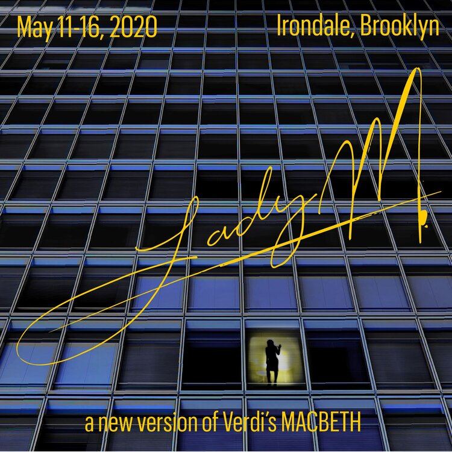

By Carl Maria von Weber.
Newly conceived and adapted by Louisa Proske.
Directed by Louisa Proske and Chloe Treat.
December 4 - 15 @ Baruch Performing Arts Center, Manhattan

LADY M
A new version of Verdi's Macbeth.
Directed and adapted by Ethan Heard.
Arranged by Daniel Schlosberg.
Music directed from the violin by Jacob Ashworth.
May 11, 13, 15 & 16, 2020 @ Irondale, Brooklyn